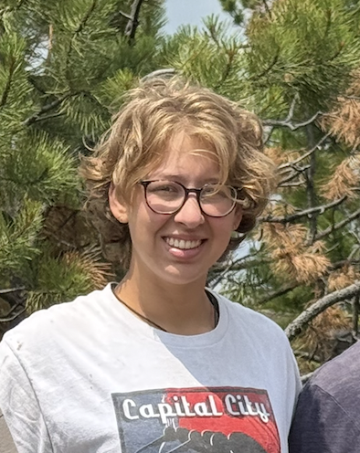

Hi! I am a master's student in the Department of Geology and Geophysics at the University of Wyoming working with Dr. Ken Sims. My research involves using machine learning to identify economically viable mineral deposits, and evaluating non-traditional stable isotopes to see whether they can be used to vector towards these deposits.